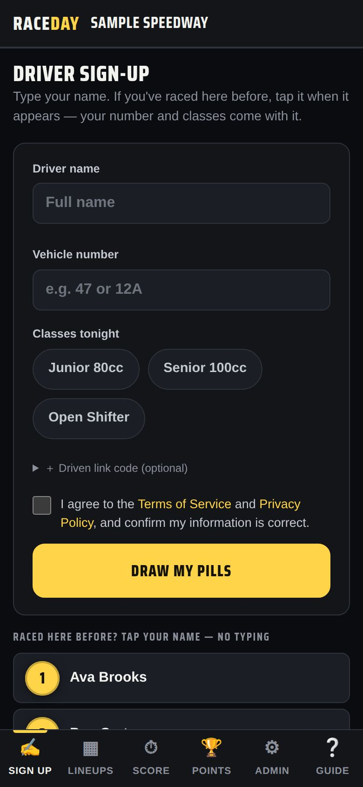
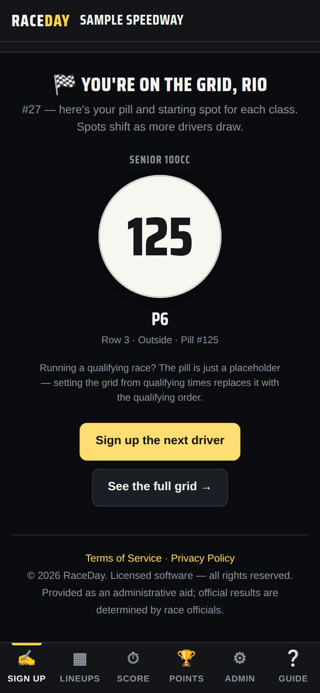

-
Set up the device
Use the main device's Sign up tab, or a separate tablet opened from the Registration link (see Multiple devices) — that one shows only sign-up.
-
Returning drivers: tap your name
Under “Raced here before? Tap your name — no typing”, a returning driver taps their name. Their number fills in and the classes they ran last time are ticked.

Returning drivers -
New drivers: name, number, classes
Type the Driver name and Vehicle number (1–5 letters or numbers, like 47 or 12A), then tap each class they're racing tonight. Drivers with a Driven profile can add their link code under ＋ Driven link code (optional).

A new driver -
Agree and draw
If your track requires it, the driver ticks the consent box. Then tap Draw my pills.
-
Show them their spot
The screen shows “You're on the grid” with their pill number and starting spot for each class. Spots can shift as more drivers draw. Tap Sign up the next driver.

Pill drawn -
When something goes wrong
- Wrong number or class? The race director fixes it in Admin → Today's entries.
- “All pills are taken” — the race director raises that class's Pills 1– number in Race classes.
- Same name and number as a saved driver — RaceDay asks to confirm it's the same person.
Good to know
- For a qualifying class the pill is just a placeholder — qualifying times set the real grid.
- Want drivers to sign themselves in? Turn on kiosk mode — see Fans & TV.
Next guides
Still stuck? The Field Manual walks through every screen, and the FAQ covers common questions. Or just ask.
Email a question →